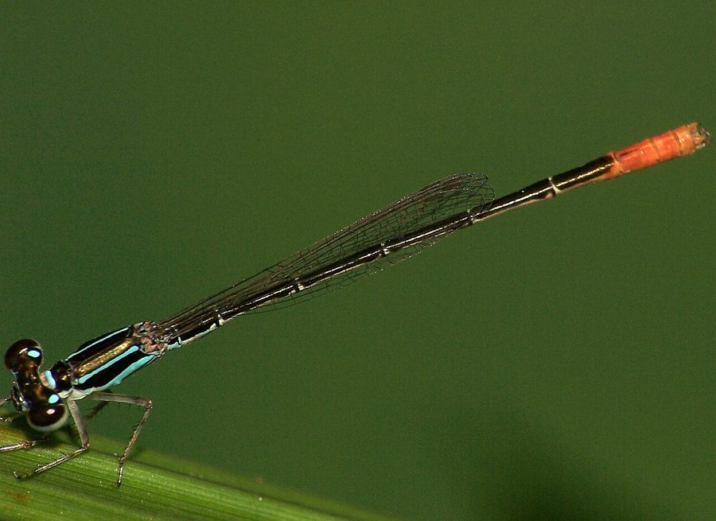

व्हाइट डार्टलेट व्याध पतंगWhite-dartlet
Agriocnemis femina · Coenagrionidae · INS-0207

- Scientific name वैज्ञानिक नाम
- Agriocnemis femina (Brauer, 1868)
- Family कुल
- Coenagrionidae
- Hindi हिंदी
- व्हाइट डार्टलेट व्याध पतंग
- Local names स्थानीय नाम
- white-dartlet, white dartlet, white dartlet damselfly, safed dartlet vyadh patang
- Status here यहाँ की स्थिति
- native
- Movement आवागमन
- Resident, here all year
- Known from कहाँ दर्ज
- Others have published records from the wider Awadh–Purvanchal plain, none yet from Basti–Ayodhya अवध–पूर्वांचल से दूसरों के प्रकाशित अभिलेख, बस्ती–अयोध्या से अभी नहीं
- IUCN IUCN
- not evaluated
- Review समीक्षा
- not yet reviewed
When to look कब देखें
Present all year. साल भर मौजूद।
Uses and possibilities उपयोग और संभावनाएँ
Drawn from the documented uses in the profile below, where each is labelled traditional, current or a research lead. All uses →
Tell it apart from इनसे अलग पहचानें
व्हाइट डार्टलेट व्याध पतंग / White-dartlet
Agriocnemis femina (Brauer, 1868) — Coenagrionidae
व्हाइट डार्टलेट व्याध पतंग — उथले दलदलों, घास वाली पानी की नालियों और धान के खेतों के पास पाई जाने वाली एक अत्यंत नन्ही और सुंदर डैमसेल्फ़्लाई है। इसके वयस्क नर का सीना और आगे का पेट सफेद पाउडर (pruinescence) से ढक जाता है, जबकि पूँछ का अंतिम भाग चमकीला नारंगी होता है। यह घासों के बिल्कुल नीचे तैरती हुई सी उड़ती है और हवा में उड़ने वाले सूक्ष्म कीड़ों तथा मच्छरों को खाती है।
Quick Identification त्वरित पहचान
| Feature | Description |
|---|---|
| Size | Minute, very slender damselfly; abdomen 16–18 mm, hindwing 10–11 mm (Subramanian 2005) |
| Mature Male Thorax | Coated dorsally and laterally in dense white pruinescence (Fraser 1933) |
| Mature Male Abdomen | Basal segments 1 to 6 coated in white pruinescence; segments 7 to 10 bright orange (Subramanian 2005) |
| Eyes | Apple-green capped with black above (Fraser 1933) |
| Young Male | Greenish-yellow with black markings before developing white pruinescence (Fraser 1933) |
| Female Colour | Strongly polymorphic; red form (teneral) transforms to green-and-black with orange tail (Subramanian 2005) |
| Flight Habit | Weak, fluttering flight deep inside dense emergent grass |
Field tip: Look low among thick grassy edges of shallow ponds and flooded ditches. A tiny, thread-like damselfly whose mature male has a frosted white thorax and basal abdomen contrasting with bright fiery-orange terminal segments, flying slowly through dark sedges, is the White-dartlet.
हिंदी: पानी की घासों में बहुत नीचे उड़ने वाली इस नन्ही पतंग के आगे का हिस्सा सफेद पाउडर जैसा और पूँछ का सिरा चमकीला नारंगी होता है।
Morphology आकारिकी
Measurements as given in the handbooks (Subramanian 2005; Fraser 1933):
| Measurement | Range | Source |
|---|---|---|
| Abdomen length | 16–18 mm | Subramanian (2005) |
| Hindwing length | 10–11 mm | Subramanian (2005) |
Adult description:
Agriocnemis femina is one of the smallest zygopterans in the Oriental realm, displaying striking developmental colour changes and female polymorphism (Fraser 1933). The head has a velvety black vertex bearing small, circular, pale green or bluish postocular spots; the frons and clypeus are pale green (Subramanian 2005). In young males, the synthorax is black on the dorsum with narrow pale apple-green antehumeral stripes (Fraser 1933).
As the male reaches full sexual maturity, a dense, chalky-white pruinescence covers the dorsal and lateral surfaces of the thorax and spreads over abdominal segments 1 through 6 (Subramanian 2005). In sharp contrast to this white coating, abdominal segments 7 through 10 remain completely free of pruinescence, shining in brilliant fiery orange or vermilion (Fraser 1933). The anal appendages are small, bright orange, and curved slightly inward (Subramanian 2005).
Females exhibit remarkable ontogenetic polychromatism: newly emerged females are brilliant orange-red (the ruber form), with bright red head, thorax, and abdomen (Fraser 1933). As they mature, this red pigmentation is completely replaced by a black-and-green pattern, with a dark bronze-black thorax marked with green stripes and an abdomen that is dark above with bright orange terminal segments (Subramanian 2005). In both sexes, the wings are narrow, petiolate, and completely transparent, with small pale brown pterostigmata (Fraser 1933).
Larval Stage निम्फ अवस्था
The aquatic naiad is tiny, fragile, and pale translucent green or light yellowish-grey, camouflaged among flooded grass roots and algal mats. The caudal gills are elongate, narrow, and rounded at the tips, adapted for extracting oxygen in stagnant shallow water.
हिंदी: इसका पेट केवल 16 से 18 मिमी लंबा होता है। वयस्क नर का आगे का शरीर सफेद पाउडर से ढका और पूँछ नारंगी होती है। युवा मादा लाल रंग की होती है जो बाद में हरी-काली हो जाती है।
Behaviour & Ecology व्यवहार और पारिस्थितिकी
The White-dartlet is a low-flying, shade-tolerant dweller of dense emergent vegetation in calm, shallow wetlands (Subramanian 2005). It inhabits stagnant village tanks, marshy ditches, waterlogged pasture depressions, and shallow flooded fringes of rice paddies (Fraser 1933). Because of its minute size and fragile build, it rarely ascends above the shelter of grassy blades, staying within ten to twenty centimetres of the water.
Adults are active during calm sunny periods from mid-morning to early afternoon (Subramanian 2005). Males perch horizontally on thin grass culms or sedges, their white-and-orange bodies reflecting sunlight. Territorial encounters consist of subtle wing-fluttering displays without aggressive chases. Mating occurs in tandem amongst vegetation. The female oviposits alone into the submerged tissues of fine grassy weeds and floating leaves.
हिंदी: यह डैमसेल्फ़्लाई बहुत शांत और धीमी गति से उड़ने वाली होती है। यह तेज हवाओं से डरती है और घासों के अंदर ही रहकर छोटे कीड़ों को खोजती है।
Life Cycle / Phenology जीवन चक्र
Seasonal phenology in northern Indian alluvial wetlands across the agricultural year (Fraser 1933; Subramanian 2005):
| Season / Month | Stage | Field Observation |
|---|---|---|
| July–September (Kharif monsoon) | Adult emergence & breeding | Explosive population emergence in newly flooded fields and ditches (Subramanian 2005) |
| October–November (Post-monsoon) | Peak adult numbers | Abundant along receding wetland edges and grassy drains |
| December–January (Rabi winter) | Naiad development | Aquatic nymphs develop slowly in perennial swampy pools |
| February–April (Spring / Zaid) | Adult emergence | Spring brood active around irrigated channels and village tanks (Fraser 1933) |
| May–June (Pre-monsoon summer) | Drought refuge | Persists as naiads or adults in perennial seepage depressions (Subramanian 2005) |
Females insert microscopic eggs singly into the submerged stems and leaves of aquatic grasses, sedges, and plants like Ipomoea aquatica (Water Spinach). The eggs hatch after a few days into tiny aquatic nymphs. Naiads develop rapidly through several instars over a few weeks, preying upon micro-invertebrates before crawling up an emergent grass stem to emerge as winged adults. Several generations are completed annually.
हिंदी: मादा पानी के अंदर डूबी घासों में अंडे देती है। कुछ दिनों में अंडे फूटते हैं और पानी में रहने वाला निम्फ कुछ ही हफ्तों में वयस्क बनकर बाहर आ जाता है।
Host Plants or Prey आहार
Agriocnemis femina is an obligate micro-predator throughout its life history (Subramanian 2005):
Adult diet:
- Small disease-carrying mosquitoes, such as Culex quinquefasciatus (Southern House Mosquito) and Anopheles culicifacies (Malaria Mosquito).
- Tiny agricultural pests of rice crops, including Nilaparvata lugens (Brown Planthopper) and Nephotettix virescens (Green Leafhopper).
- Micro-dipterans, including midges (Chironomidae), fungus gnats, and tiny fruit flies.
Larval diet:
- Mosquito wrigglers, ostracods, water fleas (Cladocera), and microscopic aquatic worms in shallow water.
हिंदी: यह सूक्ष्म शिकारी कीट धान के खेतों के फुदकों, छोटे मच्छरों और पानी पर भिनभिनाने वाले कीड़ों को खाकर जैविक नियंत्रण में महत्वपूर्ण भूमिका निभाता है।
Predators / Natural Enemies शत्रु
Natural predators documented preying upon Agriocnemis femina in Gangetic plain agroecosystems:
- Spiders: Wetland orb-weavers and small nursery web spiders (Pisaura) capture flying adults in dense grasses.
- Predatory dragonflies: Larger co-occurring dragonflies, such as Orthetrum sabina (Slender Skimmer) and Crocothemis servilia (Scarlet Skimmer), readily prey on perching dartlets.
- Amphibians: Tiny metamorphs of Euphlyctis cyanophlyctis (Skittering Frog) catch adults perching near the water line.
- Aquatic bugs: Giant water bugs and backswimmers prey upon the tiny aquatic naiads.
हिंदी: घास में जाला बनाने वाली मकड़ियाँ, बड़ी व्याध पतंगें और पानी के मेंढक इस नन्ही सफेद डैमसेल्फ़्लाई को पकड़कर खाते हैं।
Agricultural / Human Relevance कृषि प्रासंगिकता
Agroecological benefits in rice cultivation: Agriocnemis femina is an effective natural bio-control ally in paddy farming systems of northern India (Subramanian 2005). Because it forages at the extreme base of rice stems where planthoppers like Nilaparvata lugens (Brown Planthopper) aggregate, it directly attacks early pest stages that larger dragonflies flying overhead cannot reach.
Public health contribution: By consuming significant numbers of vector mosquitoes (Culex and Anopheles) breeding in stagnant village ditches, it helps suppress rural vector-borne disease transmission (Subramanian 2005).
Traditional: No traditional uses are recorded.
Today: Valued by agricultural ecologists as a bio-control agent in lowland rice ecosystems.
Research direction (a lead, not a result): Assessing the micro-habitat vertical stratification of Agriocnemis predation relative to chemical insecticide application heights.
हिंदी: यह कीट धान के पौधों की जड़ों के पास जाकर हानिकारक फुदकों को खाता है, जहाँ बड़े शिकारी नहीं पहुँच पाते। यह किसानों के लिए अत्यंत उपयोगी कीट है।
Expected Locally स्थानीय रूप से अपेक्षित
Not a field record. Written from published accounts for eastern Uttar Pradesh. No confirmed local sighting yet — if you have seen it, that is what the atlas needs.
अभी तक स्थानीय पुष्टि नहीं। यह विवरण प्रकाशित स्रोतों से है, किसी अवलोकन से नहीं।
The White-dartlet is expected across eastern Uttar Pradesh in shallow flooded ditches, grassy edges of village tanks, and waterlogged rice fields. Look closely among thick grass blades close to the water on calm sunny mornings from July through November. GBIF holds published records from the wider Awadh–Purvanchal plain, none yet from Basti–Ayodhya. A photograph with date and location, submitted through the About page, would confirm the first local documentation for the district.
Distribution वितरण
Global range: Widespread across South and Southeast Asia to Australasia and the Pacific islands, including India, Sri Lanka, Nepal, Bangladesh, Myanmar, Thailand, China, the Philippines, Indonesia, and Australia (Fraser 1933).
In India: Recorded throughout peninsular India, the Western and Eastern Ghats, central India, and across the Gangetic plain to Assam and the Andaman Islands (Prasad & Varshney 1995; Mitra 2002).
In Uttar Pradesh: Documented from riverine wetlands, drainage canals, and agricultural plains across central and eastern districts.
In Basti district / eastern UP: Expected as a common resident breeding damselfly in rural paddy fields, borrow pits, and seasonal village marshes.
हिंदी: यह भारत से लेकर ऑस्ट्रेलिया तक व्यापक रूप से पाई जाती है। उत्तर प्रदेश के मैदानी इलाकों के दलदलों और धान के खेतों में इसकी उपस्थिति स्वाभाविक है।
Research Questions शोध प्रश्न
- How do the juvenile red females of Agriocnemis femina avoid male harassment compared to mature green-and-black females? / युवा लाल मादाएं नरों की छेड़खानी से कैसे बचती हैं?
- What is the daily predation rate of Agriocnemis femina on brown planthopper nymphs in eastern UP rice paddies?
- How do varying levels of water salinity or fertilizer runoff influence egg hatching success in seasonal field drains? / खाद और रसायनों के बहने से इसके अंडों पर क्या असर पड़ता है?
- What visual cues trigger the development of white pruinescence in maturing adult males?
- Can simple shoreline dip-net surveys by school nature clubs document local naiad density without harming the population?
Similar Species मिलती-जुलती प्रजातियाँ
| Species | How to tell apart | हिंदी | |
|---|---|---|---|
| Agriocnemis pygmaea ([[pygmy_dartlet\ | Pygmy Dartlet]]) | Male thorax green and black, never developing dense white pruinescence; terminal abdomen segments orange | पिग्मी डार्टलेट — बिना सफेद पाउडर वाली हरी डार्ट |
| Agriocnemis lacteola ([[milky_dartlet_damselfly\ | Milky Dartlet Damselfly]]) | Abdomen completely milky white dorsally on segments 1–8; terminal segments black, not bright orange | मिल्की डार्टलेट — पूरी तरह सफेद पेट |
| Ceriagrion coromandelianum ([[coromandel_marsh_dart\ | Coromandel Marsh Dart]]) | Distinctly larger; entire body bright citron-yellow; lacks white pruinescence or orange tail | कोरोमंडल मार्श डार्ट — बड़ा पीला शरीर |
Field rule: A miniature damselfly perching low in wetland grass whose mature male has a frosted chalky-white thorax and basal abdomen contrasting sharply with bright fiery-orange terminal segments is the White-dartlet.
हिंदी: पिग्मी डार्टलेट हरी होती है और मिल्की डार्टलेट की पूँछ काली होती है, जबकि व्हाइट डार्टलेट के आगे का शरीर सफेद और पूँछ चमकीली नारंगी होती है।
Taxonomy & Classification वर्गीकरण
Original description. Described by Friedrich Brauer in 1868 (originally under the basionym Agrion chinense femina) as Agriocnemis femina in Verhandlungen der kaiserlich-königlichen zoologisch-botanischen Gesellschaft in Wien, 18, page 543. Type locality: "Luzon" (Philippines).
Subspecies. Monotypic — no subspecies are recognized across its extensive Indo-Pacific range.
Family and order placement. Order Odonata, suborder Zygoptera, family Coenagrionidae. The genus Agriocnemis Selys, 1869, comprises the dartlets or wisp damselflies, renowned as some of the smallest odonates on earth.
Phylogenetic notes. Agriocnemis femina is closely allied to A. pygmaea, distinguished by male penile morphology and the distinctive male pruinescence on the anterior abdomen (Subramanian 2005).
IUCN status rationale. Not evaluated (NE) on the global IUCN Red List of Threatened Species. It is an abundant and secure wetland species across its vast tropical distribution.
हिंदी: इसका वैज्ञानिक नाम Agriocnemis femina है और यह Coenagrionidae परिवार की सदस्य है। प्रकृति में इसका वास पूरी तरह सुरक्षित है।
Photo Gallery फोटो गैलरी
No photos yet — add field photos to media/species/white_dartlet/ and run node scripts/sync_photos.js.
Photos needed आवश्यक फोटो
- [ ] Adult male perched on grass showing white pruinose thorax and orange tail (सफेद और नारंगी नर घास पर)
- [ ] Teneral red female showing bright orange-red body (लाल रंग की युवा मादा)
- [ ] Mature green-and-black female on sedge blade (वयस्क मादा की शारीरिक बनावट)
- [ ] Mating pair in tandem wheel among wetland weeds (घास पर प्रजनन करती जोड़ी)
References संदर्भ
- Brauer, F. (1868). Dritter Bericht über die auf der Weltfahrt der kais. Fregatte Novara gesammelten Libellulinen. Verhandlungen der kaiserlich-königlichen zoologisch-botanischen Gesellschaft in Wien, 18: 541–558 [p. 543].
- Fraser, F. C. (1933). The Fauna of British India, Including Ceylon and Burma. Odonata, Vol. 1. Taylor and Francis, London, pp. 402–404.
- Subramanian, K. A. (2005). Dragonflies and Damselflies of Peninsular India — A Field Guide. E-book of Project Lifescape, Centre for Ecological Sciences, Indian Institute of Science and Indian Academy of Sciences, Bangalore, p. 54.
- Prasad, M. & Varshney, R. K. (1995). A check-list of the Odonata of India including data on larval studies. Oriental Insects, 29(1): 385–428.
- Mitra, T. R. (2002). Geographical distribution of Odonata (Insecta) of Eastern India. Memoirs of the Zoological Survey of India, 19(1): 1–208.
- GBIF Occurrence Data — Agriocnemis femina, India (2025).
Source file: species/fauna/insects/white_dartlet.md